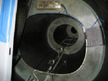

|
March 31, 2007 2.5 hours - Install Strobe Power
Supply
I mounted the strobe power supply on the aft fuselage bulkhead
as instructed in the kit manual, using Loctite on the nuts behind the bulkhead.

I connected the strobe wire harness to the power supply and
determined the routing of the wires. I drilled holes around the perimeter of the bulkhead opening and secured the wires
to the bulkhead with zip ties as instructed in the kit manual.
I routed the wires that lead to the wing root connectors along
the side of the fuselage and through the fuel line mounting loops and the cockpit bulkhead opening. After ensuring the
proper slack to reach the strobe connector that will be in the wing root, I taped the wires to the sides of the fuselage as
shown in the kit manual.
In the center photo above, the purple line is the right tank fuel feed, the blue wire
goes to the right wing tip strobe light, and the black line is the housing for the ballistic chute deployment lanyard.
June 6th, 2010 1.5 hours - Continue electrical
system installation
I checked the battery charge level and measured
the voltage at 11.9 volts. I connected a Schumaker 6 volt/12 volt charger/maintainer model SEM-1562A. After a
few hours it indicated full charge on the battery, and the battery voltage measured 13.3 volts.
The Schumaker device is a type endorsed by
Bob Nuckols on his Aeroelectric Connection web forum. I highly recommend this forum as an outstanding source of good advice for people building their own aircraft.
The charger/maintainer will detect state of the battery, confirm proper polarity of the connection, charge at a relatively
slow rate, then reduce the charge rate to a level appropriate for long-term battery maintenance. It can be left connected
to the battery for long periods to keep the battery charged without damage. The charger instructions also say that it detects a state known as sulfidation that occurs when lead-acid
batteries are unattended and allowed to self-discharge over a long period, and to enter a special charge pattern designed
to recover a battery from this condition. I was skeptical of this, but I had an old battery on my garden tractor that
two other standard chargers would not charge at all. I figured I had nothing to lose, so I hooked up the Schumaker charger
and it recovered the battery to full charge! I wouldn't trust my aircraft battery after this sort of abuse, but for
a tractor it saved me buying another battery until it is finally and fully dead. Meanwhile, my tractor starts just fine
now.
|
| Battery disconnect switch |
The kit manual does not cover installation of the battery disconnect. After inspection of the electrical
panel at the firewall and the electrical diagram in the kit manual, I located the disconnect switch in the battery ground
line.
After studying some photos of another Sinus located
near here, I determined that the red plastic key is inserted into the bottom of the disconnect switch. The small brass
cylinder at the end of the key stem then operates the switch when the key is rotated. After inserting the key, rotating
the switch about 20 degrees will retain the key in the off position. Rotating the switch another 90 degrees will turn
the switch on, which I verified with an ohmmeter.
|
| Bottom view of switch showing key receptical |
|
| Disconnect key in battery off position |
|
| Disconnect key in battery on position |
The disconnect cable will pass through the sleeve in the electrical switch panel marked Pull for Battery Disconnection
and attach to the hole in the end of the switch paddle. Before flight you reach under the instrument panel and rotate
the switch to connect the battery. To disconnect the battery, you pull on the ring at the switch panel to rotate the
switch to the off position.
June 11, 2010 0.6 hours - Connect magneto ground
leads
Leon Brecelj answered my email question, confirming the hookup of
the magneto grounding leads. I cut off the connectors that were already installed and used knife splices to make the
connection. I covered the connections with heat shrink tubing. The knife splices will permit the connections to
be disassembled in the future when removing the engine for maintenance.
February 18th, 2011 0.4 hours - Install cockpit
light
I installed an LED cockpit light, Aircraft Spruce part 11-07481, manufactured by Airkit LLC, Model 754W-14V.
February 20th, 2011 3.5 hours - Wiring installation
I worked on routing the wires and cables
behind the instrument panel. First I cut the wires to approximate length and marked them for Dynon connector pins to
which they will be attached.
February 27th, 2011 5.5 hours - Wiring installation and
baggage compartment lights
I added an Amp connector to the power wires
from the radio and replaced the connector on the switch panel to match. I extended the cockpit light wires to the switch
panel, crimped Amp pins onto the wires and inserted them into the connector. I also extended the nav/strobe power wires
to the switch panel and crimped Amp pins onto the wires. I replaced the connectors for nav/strobe lights, cockpit light,
transponder and landing light with an Amp connector. I will use the landing light switch to control power to the variometer.
I laid up two carbon fiber domes that I will
use to mount LED lights in the baggage compartment.

March 4th, 2011 1.9 hours - Baggage compartment lights
I removed the peel ply from the layups for the
baggage compartment light mounts, trimmed the edges and drilled openings in faces of the mounts. I cut mounting inserts
from 1/8" plywood, installed 4-40 blind mounting nuts, bolted the lights to the mounts with 4-40 machine screws, then
epoxied the plywood inserts to the back of the mount faces.
March 10th, 2011 2.2 hours - Wiring installation
I continued routing and labeling wires, and
crimping connectors.
March 12th, 2011 8.5 hours - Wiring installation and
baggage compartment lights
I cut holes for separate Skyview power
switches and mounted the pilot display switch. The Dynon display has its own on-off function, but these switches will
permit me to force the displays to operate from their own backup batteries while I'm soaring (or turn them off completely),
so as to save the battery and ensure that I can restart the engine.
I epoxied the baggage compartment lights
to the top of the baggage compartment and wired them to a switch with power from the extension fuse block.
After
doing some final wire routing, I am nearly done with the electrical installation.
March 24th, 2011 4.5 hours - Wiring installation
I had ordered some 1-amp ceramic fuses
with leads attached. These are to protect the wires coming from the ammeter shunt to the Dynon EMS, which provides an
ammeter function. I crimped the fuses into the ammeter leads and covered them with heat shrink tubing.
The radio intercom function includes a provision
for music input from an MP3 player (or equivalent). This input is a shielded wire, which was too short to reach the
point where I wanted to mount the input jack. So I ordered some shielded wire, extended the lead and connected it to
a phone jack from Radio Shack. I mounted the jack on the side of the instrument console on the right side, where the
copilot can plug in a player, put the player on the shelf and listen to music.
March 25th, 2011 1.7 hours - Wiring installation
I received the second Skyview switch,
installed it and connected the power leads.
I wrapped up some final wiring details behind the panel and
re-checked everything to ensure that things were ready to apply power. Then I topped off the battery charge, hooked up the connectors and installed the main switch
panel. Finally, I closed
the master ground switch on the main power panel, which completes the ground circuit for the entire electrical system.
I first tried the main key switch on the switch
panel and got a power indication (red generator light). Then I checked that the 12-volt power showed up at the right
spots, and installed a fuse for the cockpit light. I flipped the switch and the light came on -- so far, so good.
I installed the fuse for the baggage compartment lights in the extension fuse panel and they also worked normally. At
that point it was time to try the cockpit displays and avionics.
|